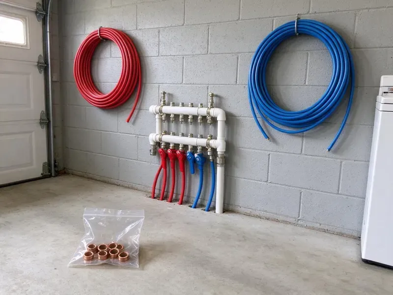

Backflow Preventer Installation in Apple Valley, MN
From residential pressure vacuum breakers to commercial RPZ assemblies, we handle backflow preventer installation across Apple Valley, MN.
- Code-Compliant Devices
- Licensed Minnesota Plumbers
- Prompt Installs
- Written Prices Up Front
The Right Backflow Assembly for Your Property in Apple Valley, MN
We install the right assembly for your hazard level and file the test report with your water provider.
Certified Backflow Installers in Apple Valley, MN
Most backflow work in Apple Valley, MN starts with a letter from the water provider. It names the device type and a deadline, and our job is to install exactly that assembly, at the right height and orientation, then certify it and send the report so the account stays clear. Bring us the letter.
Some of what we do:
- Initial certification testing and report filing
- Fire line and boiler isolation devices
- Residential and commercial assemblies

Additional Plumbing Installation Services in Apple Valley, MN
We install water heaters, pumps, lines, and fixtures across Apple Valley, MN with precision workmanship that meets every local code.


Customers
Why Choose CNV Plumbing for Backflow Preventer Installation in Apple Valley, MN?
Our plumbers know Minnesota plumbing codes on backflow, including height, clearance and drainage rules. Those details decide whether the device passes, and getting them wrong means a reinstall, a second permit fee and another week of the water provider sending reminder letters to your address. Details matter here.
- Property Protection, Stopping backflow protects your whole plumbing system and avoids costly cleanup.
- Code Compliance, Many towns in Minnesota require devices on certain connections, and we install the one yours calls for.
- Water Safety, A backflow device stops dirty water from flowing back into the clean side.
Citywide Coverage
Every neighborhood in Apple Valley is in our service area for backflow installs. Downtown storefronts and suburban homes both get the same crew, and that crew knows the device the local provider expects on irrigation, fire lines and commercial mains. One visit covers most jobs.
Experienced Team
Our licensed plumbers install backflow devices every week. They train regularly on new assemblies and code updates, so the installs they do in Minnesota match what inspectors and testers are looking for this year, not five years ago. Rules change often.
Safety-First Approach
RPZ relief valves can discharge a lot of water at once. We install RPZs where that discharge will not flood the building, with an air gap drain or a spot outside where the water can run off, and we follow manufacturer clearance and orientation rules on every one. Floods from relief valves are avoidable.
Trusted Certified Apple Valley Plumbing Services Professionals
At CNV Plumbing, we are proud to offer certified plumbing services throughout Apple Valley, MN. Credentials matter in this trade. Every repair, install and maintenance visit follows strict safety and quality rules, and the plumbers doing the work carry recognized industry credentials.
Call Us Now PHCC Plumbing Contractor Recognition
PHCC Plumbing Contractor Recognition Better Business Bureau (BBB) Accreditation
Better Business Bureau (BBB) Accreditation Angi Certified Pro
Angi Certified Pro ISO 9001 Quality Management Certification
ISO 9001 Quality Management CertificationThe Backflow Work We Do in Apple Valley, MN
Residential Backflow Preventer Installation in Apple Valley
Lawn sprinklers are the most common reason a house needs a backflow device. We look at how your irrigation ties into the main, check what your water provider requires, and install a pressure vacuum breaker or a double check assembly on that branch so yard water cannot reach the kitchen tap in Apple Valley. Figure on a few hours.

Reduced Pressure Zone Assembly Installation in Apple Valley, MN
Commercial kitchens and chemical injection systems need an RPZ. The relief valve can dump a lot of water, so the drain gets planned first, then install the assembly above grade with enough room around it for the tester to connect a gauge kit without lying on the floor in Apple Valley, MN. We often add an air gap drain.
Understanding Backflow Preventer Installation Costs in Apple Valley, MN
Device type sets most of the price, followed by pipe size and how much piping has to change. A PVB on a house sprinkler line is a short visit, while a 4 inch RPZ on a commercial main involves heavy valves, supports, a drain plan and sometimes an enclosure, so the two land far apart on a quote in Apple Valley, MN. You get the price in writing.
Pool and Spa Fill Backflow Protection in Apple Valley, MN
Pool auto-fill lines and hose connections give chlorinated water a straight path back to the supply. We add the right device on the fill line, check that every hose bibb has a vacuum breaker, and can fold the work into a pool build or remodel so it is done before the deck goes in. A hose bibb vacuum breaker costs a few dollars.
Pressure Vacuum Breaker (PVB) Installation in Apple Valley, MN
Pressure vacuum breakers are the low-cost answer for lawn irrigation in Apple Valley, MN. They let air in when supply pressure drops, which breaks the siphon, but they only protect against back-siphonage, so they must sit above every downstream outlet and cannot be used where back pressure is possible. Clearance and drainage get checked as well.
Residential Backflow Devices in Apple Valley
Homes with irrigation or a fire sprinkler line often need a device to keep that water out of the municipal supply. The hazard decides which assembly we install, then mount it where the tester can reach it. Water lines are buried deep for that reason, but pipes in exterior walls, crawlspaces and garages still freeze during cold snaps. Outdoor units get weather-rated parts.
Reduced Pressure Zone (RPZ) Device Installation in Apple Valley, MN
High-hazard connections in Apple Valley, MN call for a reduced pressure zone assembly. That means chemical feed systems and medical equipment, where a backflow event could put something toxic in the supply, so the RPZ adds a relief valve between two checks that dumps water if either check leaks. We plan for the discharge.

Backflow Preventer Installation Cost Comparison in Apple Valley, MN
A residential PVB is the least expensive device we install. A commercial RPZ costs a good deal more in parts and labor, and size, brand, enclosure and pipe changes all move the number, but replacing a worn old device often costs less than paying for a rebuild every year. Our quote covers the first certification.
Backflow Preventer Installation Near Me in Apple Valley, MN
A local plumber who knows the regulations saves you a failed inspection. Every install meets state and local code, and we pick the device the provider actually requires rather than the one that happens to be on the truck in Apple Valley, MN. We send the report.
Got a notice from your water provider and searched for a backflow installer nearby? Call us with the notice in hand, and we can usually schedule installation and testing within a few days, making sure the device matches exactly what the letter asks for. Most notices give 30 to 60 days.
CNV Plumbing at a Glance
- Fully licensed plumbing team covering Apple Valley, MN
- 24/7 emergency service with same-day scheduling
- Upfront, flat-rate pricing before work begins
- 4.8-star rated by 501+ Minnesota customers
Apple Valley Map
Apple Valley Information
- Population
- 55,336
- Area codes
- 612/507/320
- Service area
- Apple Valley and towns within a 40 mile drive
- Nearby
- Burnsville, Eagan, Lakeville, Bloomington
A backflow preventer in Apple Valley, MN stops irrigation and process water from reversing into the clean supply when pressure drops.
Expert Services
Call CNV Plumbing for honest, reliable plumbing from people who know the trade in Apple Valley, MN.
Our Specialized Plumbing Services in Apple Valley, MN
At CNV Plumbing, we handle the full list of plumbing services across Apple Valley, MN. We go from leak detection all the way to full system installations, for homes and commercial buildings, and we do it quickly at a fair price. Here are the core services we offer:


What a Backflow Install Looks Like in Apple Valley, MN
We keep backflow installation simple so you can stay compliant without extra trips.
Request a Quote
Call (612) 712-9569 and read us any notice from your water provider. We confirm the device and give you a firm price.
Install the Assembly
We shut off the water, install the assembly with unions and test cocks, and add an enclosure if needed. Water comes back as soon as we can.
Test and Certify
A certified tester checks and tags the new device. We send results to your provider and leave you a copy.
Frequently Asked Questions About Backflow Preventer Installation in Apple Valley
Plan on roughly $300 to $1,500 for most backflow installs in Apple Valley, MN. What moves the price most is the device type, so a DCVA and an RPZ land in different places, and changes to existing pipe or a large commercial size push the number higher. We quote after seeing the site.
No, not for testable assemblies. Installation has to meet code and be certified, and a bad install can lead to contamination, fines and a second visit from the water provider that costs more than doing it right the first time. Leave it to a certified plumber.
Water running from the relief valve on an RPZ is the clearest sign. Low downstream pressure and visible leaks are others, and discolored or foul-smelling water means you should call for an inspection in Apple Valley the same day. Bad-smelling water is urgent.
Irrigation, fire sprinklers, pools and auxiliary water sources are the usual triggers. Each of those usually triggers a local requirement, and your water provider can tell you which ones apply to your property if you have not received a notice yet in Apple Valley. Call and we will look it up.
At each cross-connection, where non-potable water could reach the potable side. Common spots are irrigation tie-ins, fire lines and boiler feeds, plus auxiliary water supplies, often just after the meter for containment or right at the piece of equipment for isolation. Some buildings need both.
An RPZ protects high-hazard connections where the contaminant could make someone sick. A double check handles low-hazard lines where the contaminant is not toxic, and the RPZ adds a relief valve that dumps water between its checks, which the double check does not have. The hazard decides it.
Backflow is water flowing the wrong way through a pipe, carrying contaminants into the clean supply. It happens from back-siphonage during a pressure drop or back pressure from pumps and boilers.
In most cases, a plumbing permit is required in Apple Valley for a new assembly. The permit gets handled for you, and the inspection and test results go to the right offices so the job is fully closed out. You will not deal with the city.
Hear From Customers Who Hired Our Plumbing Experts

Marcus H.
Grease from the fryer line kept clogging the kitchen drain at my diner. CNV Plumbing hydro jetted the line after closing, showed me the buildup on camera, and set us up on a quarterly cleaning so it does not catch us on a Friday again.
Drain Cleaning · Bloomington, MN
Tyler J.
We bought a taller comfort height toilet for my dad, who just had knee surgery. The plumber pulled the old one, found the flange was cracked, and replaced it before setting the new bowl. Took about two hours.
Toilet Installation · Lakeville, MN
Sofia M.
Two new toilets went in during one visit. The tech set them on new wax rings and swapped the old supply lines. He also noticed our bathroom faucet dripping and replaced the cartridge while he was there. No mess left behind.
Toilet Installation · Eden Prairie, MN
Paul B.
Our pit pump ran nonstop even in dry weather. The plumber found the check valve was stuck open, so the same water kept cycling back into the pit. New valve, new float switch, done in an hour. It runs quiet now.
Sump Pump · Eagan, MN
Karen W.
After our third pinhole leak in copper, we stopped patching. CNV Plumbing gave us a written plan room by room and repiped the house in PEX while we stayed in it. The crew covered our floors every morning and cleaned up every night.
Repiping · Apple Valley, MN
Rachel N.
Hard water was leaving white crust on every faucet and our dishwasher was struggling. The tech tested the water, recommended a softener sized for a family of five, and installed it with a bypass valve in one afternoon. The spots on our glasses are gone.
Water Softener · Eden Prairie, MN